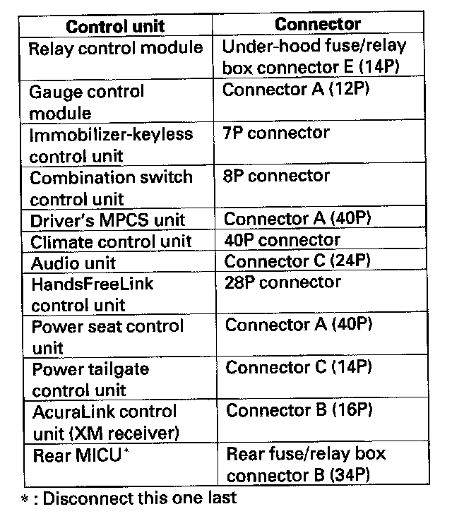
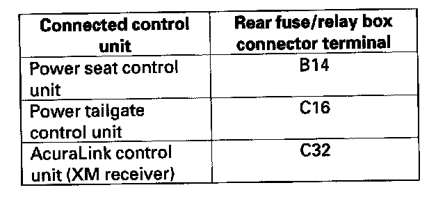
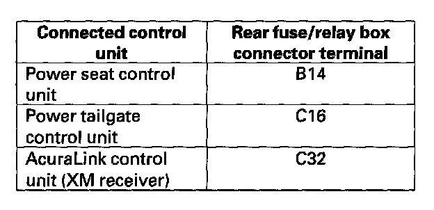
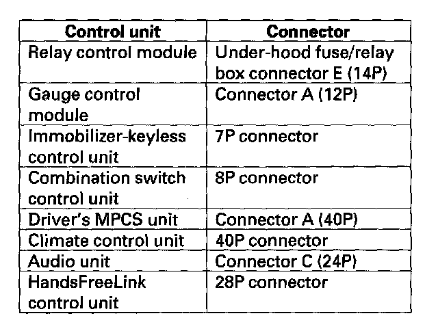
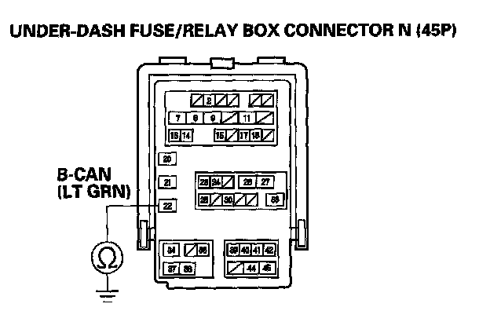
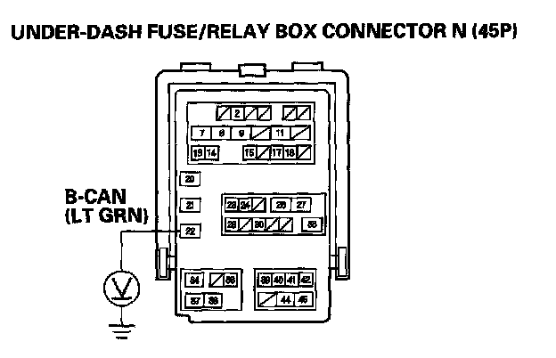

B1000
DTC B1000: Communication Bus Line Error1. Clear the DTCs with the HDS.
2. Turn the ignition switch OFF, and then back ON (II).
3. Wait for 6 seconds or more.
4. Check for DTCs with the HDS.
Is DTC B1000 indicated?
YES - Go to step 5.
NO - Intermittent failure, the communication bus line is OK at this time. Check for loose or poor connections, or worn/shorted wires. If the connections are good, check the battery condition and the charging system.
5. Check for DTCs with the HDS.
Are DTCs B1000, B1005, B1007, B1011, B1012, B1013, B1015 and B1032 all indicated?
YES - Go to step 6.
NO - Faulty MICU; replace the under-dash fuse/relay box.
6. Turn the ignition switch OFF.

7. Disconnect the appropriate connector at each control unit in the table one at a time. Clear the DTC, then recheck for DTCs after each unit is disconnected.
Is DTC B1000 indicated with each individual unit disconnected?
YES - Go to step 11.
NO - Replace the control unit that was disconnected when B1000 did not reset (If the unit is the rear MICU, go to Step 8.)
8. Disconnect the rear fuse/relay box connectors B (34P) and C (42P).

9. Check for continuity between each of the rear fuse/relay box connector terminals listed in the table and body ground.
Is there continuity?
YES - Repair the short to ground in the wire between the rear fuse/relay box and the affected control unit.
NO - Go to step 10.

10. Measure the voltage between each of the rear fuse/relay box connector terminals listed in the table and body ground.
Is there less than 1 V?
YES - Replace the rear fuse/relay box.
NO - Repair short to power in the wire between the rear fuse/relay box and the affected control unit.

11. Disconnect each control unit connectors in the table.

12. Check for continuity between the under-dash fuse/relay box connector N (45P) No. 22 terminal and body ground.
Is there continuity?
YES - Repair short to ground in the wire.
NO - Go to step 13.
13. Turn the ignition switch ON (II).

14. Measure the voltage between the under-dash fuse/relay box connector N (45P) No. 22 terminal and body ground.
Is there battery voltage?
YES - Repair short to power in the wire.
NO - Faulty MICU, replace the under-dash fuse/relay box.